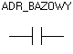

Strona tytu³owa
Opis rozkazów
Styki
Styk zwierny
Styk rozwierny
Cewki
Cewka zwierna
Cewka rozwierna
Cewka zbocze narastaj¹ce
Cewka zbocze opadaj¹ce
Cewka S
Cewka R
Liczniki
Licznik UPCTR
Licznik DNCTR
Timery
Timer ONDTR
Timer OFDT
Timer TMR
Operacje arytmetyczne
Dodawanie ADD
Odejmowanie SUB
Mno¿enie MUL
Dzielenie DIV
Reszta z dzielenia MOD
Pierwiastek SQRT
Relacje
Równy EQ
Nierówny NE
Wiêkszy GT
Wiêkszy równy GE
Mniejszy LT
Mniejszy równy LE
Zakres RANGE
Opis lekcji
Lekcja 1 Wprowadzenie
Pierwszy program
Zasada dzia³ania
Organizacja pamiêci
Obs³uga programu
Pierwsze próby
Lekcja 2 Basen
Lekcja 3 Oran¿ada
Lekcja 4 Pralka
Lekcja 5 Winda
|
|
Symbol rozkazu:

Opis dzia³ania:
Styk zwierny zachowuje siê jak prze³¹cznik, który przewodzi
pr¹d wtedy,
gdy wartoœæ pamiêci pod wybranym adresem bazowym ró¿na jest
od zera.
Dopuszczalne typy pamiêci:
|
Parametr
|
%I
|
%Q
|
%R
|
%M
|
%AI
|
%AQ
|
const
|
|
Adres bazowy
|
tak
|
tak
|
tak
|
tak
|
tak
|
tak
|
nie
|
|